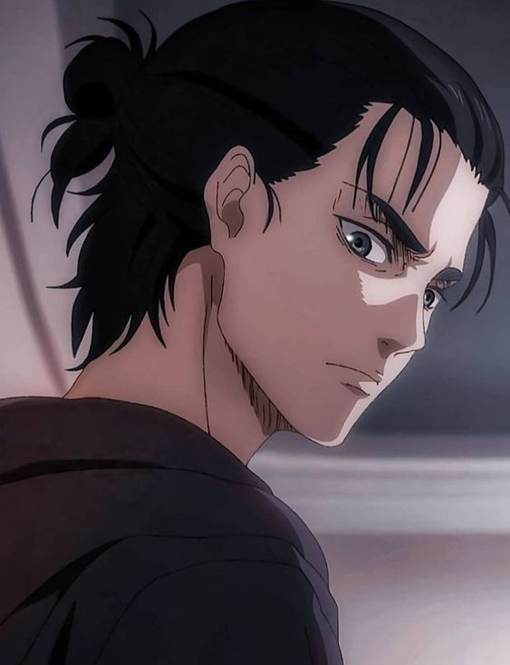
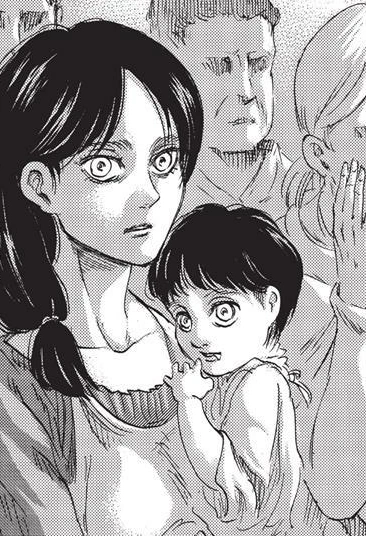
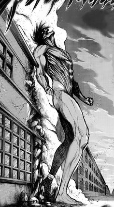
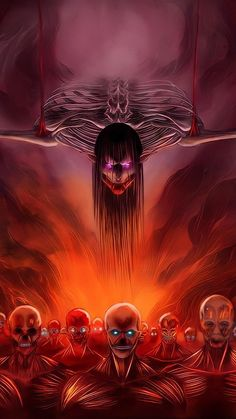
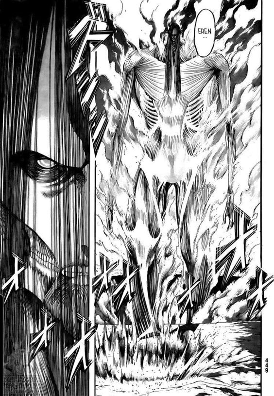

"If someone is willing to take my freedom, I won't hesitate to take theirs." -Eren Yeager
|

armin and mikasa |
Eren Yeager (エレン・イェーガー Eren Yēgā?) was a former member of the Survey Corps. He was the main protagonist of Attack on Titan. He lived in Shiganshina District with his parents until the fall of Wall Maria, where he impotently witnessed his mother being eaten by a Titan. This event would lead to Eren's intense hatred towards the Titans as he swore to wipe all of them off the face of the Earth.
Soon afterward, his father, Grisha Yeager, found him and gave him the key to his basement, instructing Eren to find it at all costs and retake Wall Maria. He then injected Eren with a Titan serum.
In the year 847, Eren, Mikasa Ackerman, and Armin Arlert joined the 104th Training Corps. The three graduated with Eren ranking 5th best, and they joined the Survey Corps following the battle of Trost District.
After finding the basement and unlocking his father's memories, Eren learned about the truth of what the Titans are, as well as the history of Eldia and Marley. Eren then vowed to free his home from their true enemy: the rest of humanity that lives across the ocean.
Eren possessed the power of three Titans. From his father, Eren inherited the Attack and Founding Titans.[39] After eating Lara Tybur during the Raid on Liberio, he gained the War Hammer Titan as well.
|

Eren |
Eren was born in Shiganshina District on March 30th, 835, in the southern region of Wall Maria to Carla Yeager and Grisha Yeager. He had a few friends, although his best friend was Armin Arlert, whom he often defended from the neighborhood bullies. Armin inspired his passion to leave the Walls and travel by showing him a hidden book about the outside world. He dreamed of joining the Survey Corps as soon as he reached the enlistment age, in order to see the outside world. Because of this dream, Eren and Armin were frequently regarded as heretics and harassed constantly by other children. When Eren was nine years old he accompanied his father on a house call to the Ackerman family's house only to find both parents murdered and their daughter Mikasa missing. Fearing the worst, Dr. Yeager instructed Eren to stay within the house while he fetched the Military Police. Eren, however, tracked the robbers to a small cabin in the forest behind the house Thinking quickly, Eren feigned distress and claimed that he was lost. As one of the robbers approached Eren, he pulled out a hidden knife and stabbed the man. As the second man went after him with an axe, Eren charged him with a makeshift spear, piercing him in the shoulder. Once he was down, Eren proceeded to stab him to death in a wild frenzy while Mikasa looked on. As Eren untied her in the aftermath, he was caught off-guard by a third robber, who proceeded to strangle him. Eren urged Mikasa, who was frozen in fear, to fight back, warning her that they would both be killed if she did nothing. As Eren began to lose consciousness, Mikasa finally lost all inhibition and lunged at their attacker, stabbing him through the heart and killing him. |
Originally, Eren's only noteworthy trait was his natural physical strength, which stemmed from having to defend his friend Armin from bullies who were bigger and stronger. As he grew and joined the 104th squad, he trained extensively in hand-to-hand combat. After additional training with Reiner and Annie, Eren's prowess and skill set diversified, including the use of punches, throws, grappling and submission locks. He had the best scores for hand-to-hand combat of the entire 104th graduate squad. While hand-to-hand fighting would appear useless due to the massive physical differences between humans and Titans, these skills gave Eren a powerful edge when fighting other Titans in his own Titan form.
Though having little talent, through intense training and effort he managed to gain a considerable amount of skill with the equipment. Even so, Eren was not completely lacking in natural aptitude. While using the damaged equipment, he had managed to stay upright for a short amount of time, which the instructor, Keith Shadis, said was an incredible feat, and balanced with ease when using proper gear. The fact he graduated as the 5th best of the 104th graduate squad, even before Jean Kirstein, who was top of the class in mobility with the gear, implied that he had considerable combat skill with the maneuvering equipment.
After the fall of Wall Maria, Grisha found Eren in a refugee camp and brought him into a nearby forest. After giving him the key to the basement, Grisha injected a struggling Eren with a serum, which transformed him into a 4 meter Pure Titan with short rugged hair and a skinny body. This Titan ate Grisha, giving Eren the powers of the Founding Titan and Attack Titan. Years later, during the first Battle of Trost, Eren was eaten alive by a Titan, and inside the stomach-like cavity saw other fellow recruits lying dead/dying, one wanting her mother before sinking in stomach acid. The sight combined with intense feelings of desperation and his drive to exterminate all Titans awoke his ability to transform into his Titan form for the first time
With the power of the Founding Titan that Grisha Yeager stole from the Reiss family, Eren possessed the ability to control nearby Titans, causing them to relentlessly attack his chosen target. However, this ability could only be used while Eren is in contact with a Titan of royal blood. The first time he used it was entirely by accident, by touching the palm of Dina Fritz's Titan, causing nearby Titans to attack and devour her, and setting the same Titans upon Bertolt and Reiner. While it is shown that others with the power of the Titans can sense the activation of his power, it is unknown whether it is possible to use it to influence or control other human-controlled Titans
|

|

|

|